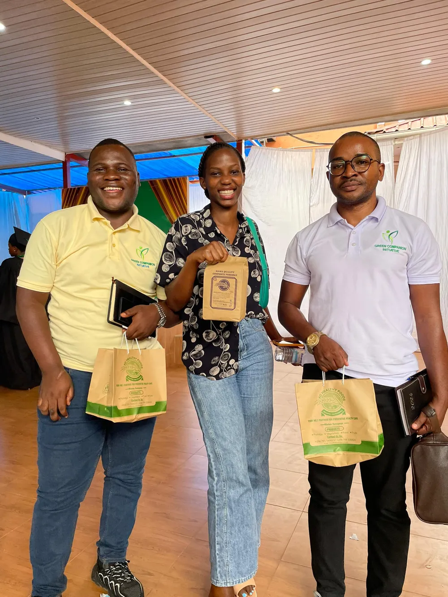
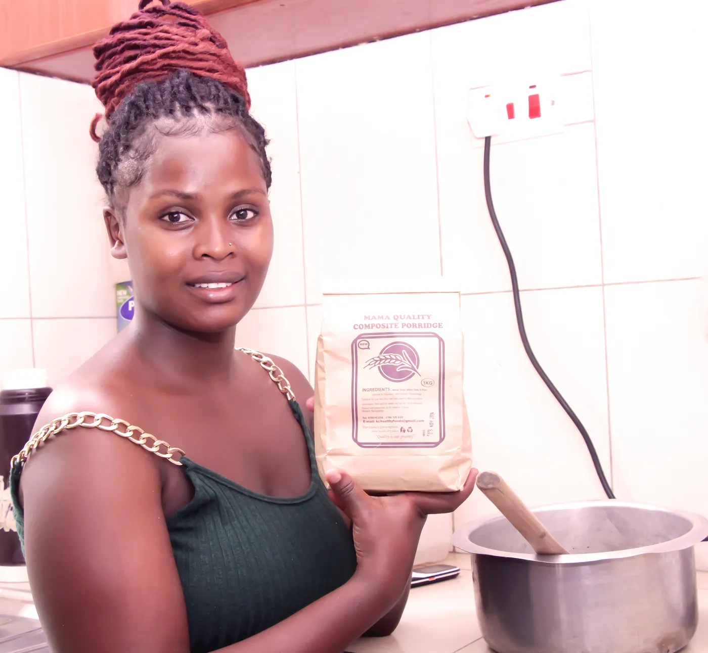
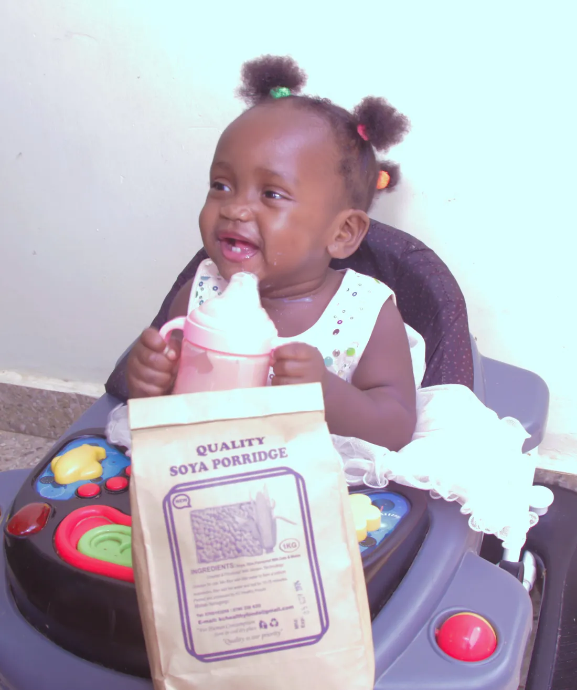
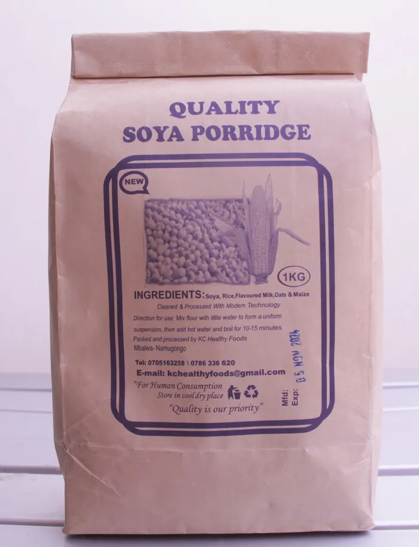
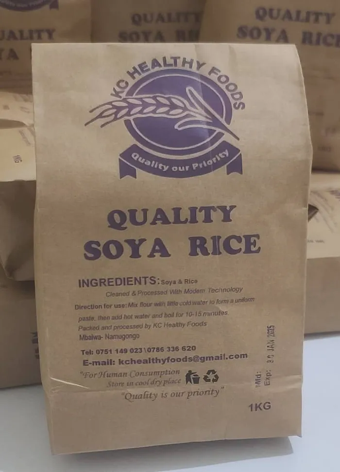
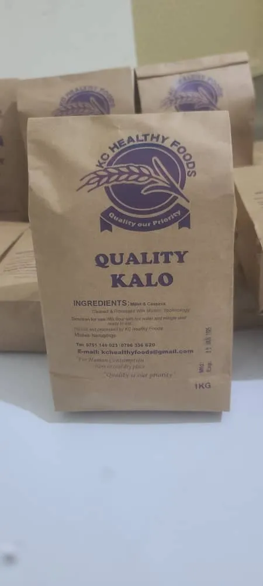

Local. Nutritious. Community-Driven.
Turn Waste Into Nourishment
Empowering women and youth smallholder farmers in Mpigi District.
Our ProgrammesEmpowering women and youth smallholder farmers in Mpigi District.
Our ProgrammesBetter drying, sorting and storage keep crops fresh and farmers earning.
The ChallengeLocally grown maize and soybeans become nutritious porridge for families.
See Our Products
Nourish Livelihoods Project is a business and social enterprise tackling post-harvest waste in Mpigi District while improving nutrition and farmer livelihoods.
We equip women and youth smallholder farmers with skills in climate-smart production, drying, storage and value addition, then connect them to a stable market.
Vision: a food-secure, climate-resilient society where communities thrive.
Mission: empower farmers with skills, technology and markets that cut losses and improve nutrition.
Values: sustainability, innovation, empowerment, food safety, inclusion.
Poor handling, drying and storage spoil maize, soybeans and other crops.
Discarded produce decomposes and adds to greenhouse gas emissions.
Limited markets and crop losses reduce what farmers earn.
Vulnerable households lack access to affordable, nutritious food.
Practical skills in sustainable production, soil management and crop diversification.

Post-harvestImproved harvesting, drying, sorting and storage protect crop quality and cut waste.

NutritionAffordable porridge from locally sourced maize, soybeans and grains, with women and youth empowered along the way.
Programmes
Value-chain stages
Impact areas
Core values
Farmers grow quality crops
Dry and store properly
Assess and buy in bulk
Process into KC Porridge
Food reaches households



Help us reduce food waste, improve nutrition and lift farmer livelihoods across Mpigi.
Join the MovementYour email app will open with your message ready to send. If it does not, write to hello@nourishlivelihoods.org.